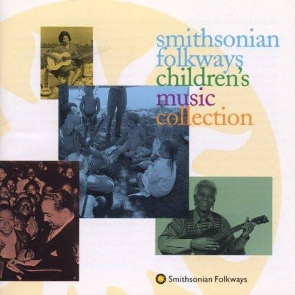
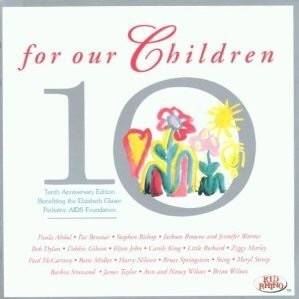
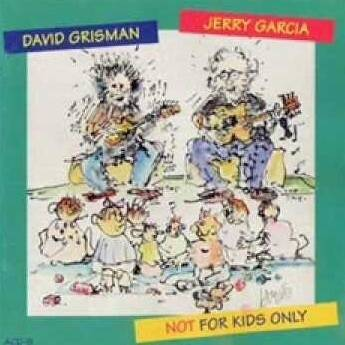
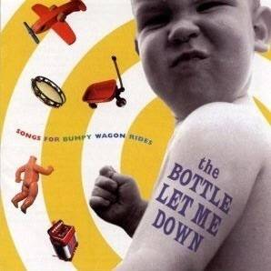
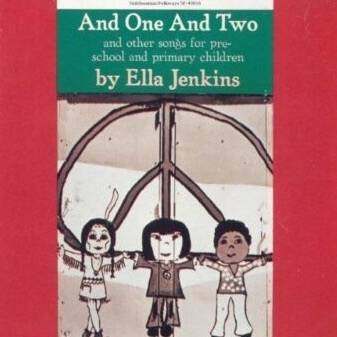
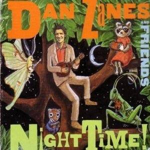
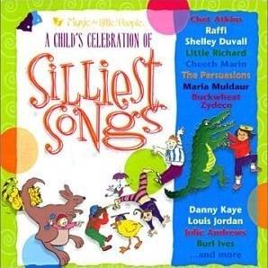

TOLERABLE CHILDREN'S MUSIC
There’s a period of time when your kids are little enough that you need some kid-friendly music to entertain them in the car. Unfortunately most children’s music is insufferable. Here are some good albums.
-

Smithsonian Folkways Children's Music Collection / Various
This whole album is fun, beautiful, and historically significant. American folk music with a kid friendly focus. A mix of greats like Pete Seeger, Ella Jenkins, Jean Ritchie and Woody Guthrie. Also some foreign language goodies.
-

For Our Children 10th Anniversary Edition / Various
I could sell this album with one sentence: Bob Dylan singing This Old Man. But it has so much more, including a gross-out song by Bruce Springsteen, Sting singing a 19th century British folk song, and a gorgeous Carole King's Child of Mine.
-

Not For Kids Only / Jerry Garcia and Dave Grisman
Two American greats riffing with children's music on guitar and banjo. It is fun-loving and delightful and occasionally moving.
-

The Bottle Let Me Down - Songs For a Bumpy Wagon Ride / Various
Indie alt-country and rock take on children's classics and some fun surprises. Don't Wipe Your Face On Your Shirt is a family favorite but there's tons of good stuff here. Also this has the best title and cover of all.
-

Ella Jenkins / And One And Two
For the younger crowd this is like Barney music that doesn't make you want to pull your hair out. Ella Jenkins is so fantastic she can sing Twinkle Twinkle Little Star with a class of kindergarteners and keep you enraptured.
-

Night Time / Dan Zanes and Friends
All Dan Zanes and Friends albums are great but this was our favorite. Fun, funky jam band that's completely kid friendly.
-

A Child's Celebration of Silliest Songs / Various
Chet Atkins singing I'm My Own Grandpa is worth the price of admission alone but there are a few other gems on this album like Taj Mahal doing Beans and Cornbread, Little Richard's On Top of Spaghetti, and a wonderful Burl Ives riddle song. My kids loved this album when they were very small.